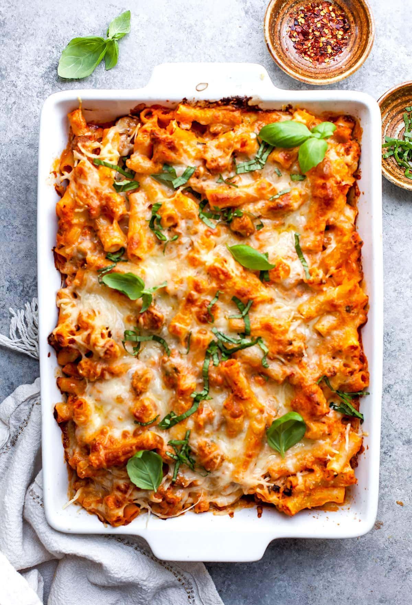

Baked Ziti

This recipe is an italian pasta dish.
Ingredients
- 2 large eggs, beaten
- 1 carton (15 ounces) ricotta cheese
- 2 & 1/2 cups shredded mozzarella cheese, divided
- 1/2 cup grated Parmesan cheese
Steps
- Cook pasta according to package directions.
- Meanwhile, preheat oven to 350°. In a large skillet, cook beef over medium heat until no longer pink; drain. Stir in spaghetti sauce.
- In a large bowl, combine eggs, ricotta cheese, 1-1/2 cups mozzarella cheese and the Parmesan cheese. Drain pasta; add to cheese mixture and stir until blended.
- Spoon a third of the meat sauce into a greased 13x9-in. baking dish; top with half of the pasta mixture. Repeat layers. Top with remaining meat sauce.
- Cover and bake 40 minutes or until a thermometer reads 160°. Uncover; sprinkle with remaining mozzarella cheese. Bake 5-10 minutes longer or until cheese is melted. Let stand 15 minutes before serving.